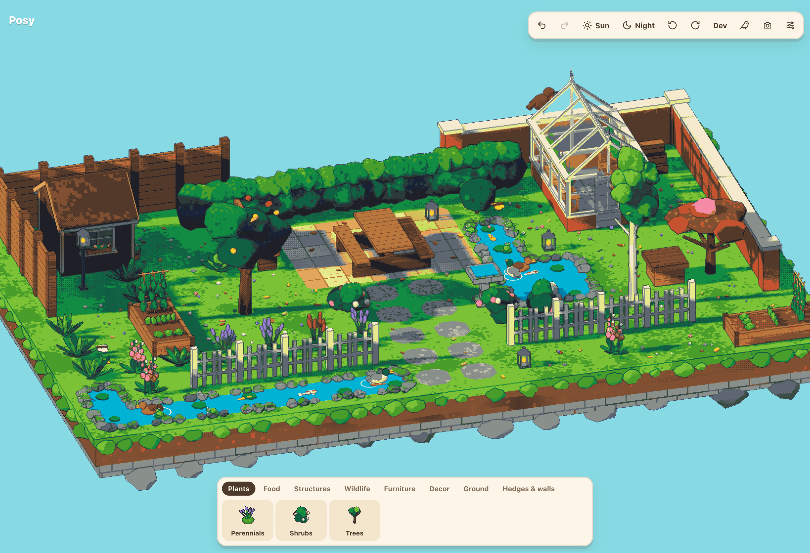
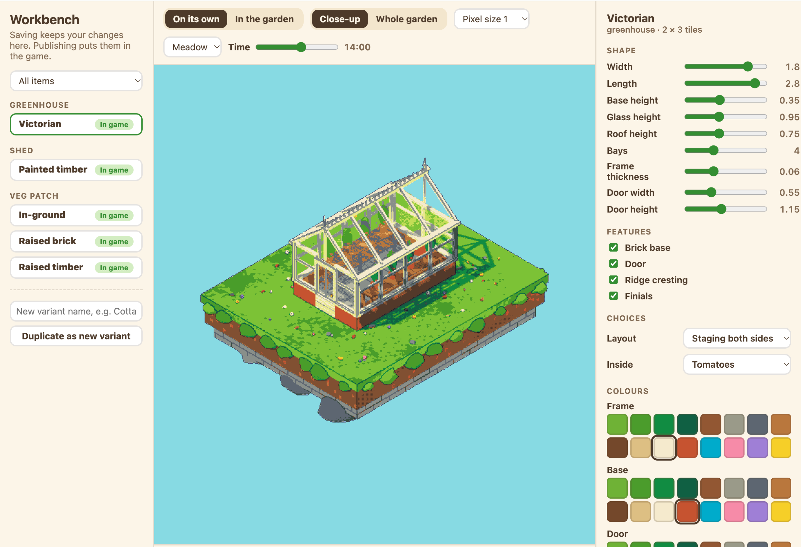

Posy is still in early development.
Gardening is a love of mine, but for most of the British season it's not exactly fun in freezing rain. So I decided to build something that captures those warm spring and summer days spent in the garden. Posy is a small 3D garden on a floating plot of land. You can place plants, vegetables, ponds, hedges, fences, and a whole host of other items to build your own little space.
Cosy games are a crowded market, but I wanted a reason to dabble in game creation, and this felt like the right excuse.
Asset creation
The biggest obstacle was the asset creation. Posy was meant to offer me a small break in the day, something I could chip away at without it becoming a slog. After some research I found creating 3D models through tools like Meshy would have introduced a blocker early on when I knew the mechanics needed the most attention. I turned to pixel art instead and, surprisingly, it fit the game feel I was going for perfectly.

Joinable assets like hedges, fences, walls are all generated in code. All of the other assets are built through a custom 'workbench'. I describe an asset (ie a small wooden shed with clay tiles) and Claude generates it for me. I can then edit the colours, dimensions, windows, height, and roof angle before publishing it into the game.

Sharing your garden
You can export your garden as a plain PNG or as a postcard. I hoped people would enjoy their gardens enough to post them.